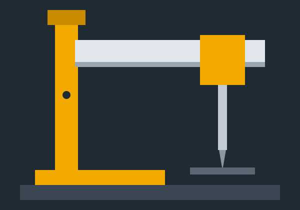

Adding a new document
- Upload the PDF into the matching folder under
documents/. - Add an entry to
documents.json(title, category, file, date, description). - Commit – the site updates automatically.
One place for every document related to the machine – for workshop, maintenance, quality and HSE personnel.

documents/.documents.json (title, category, file, date, description).